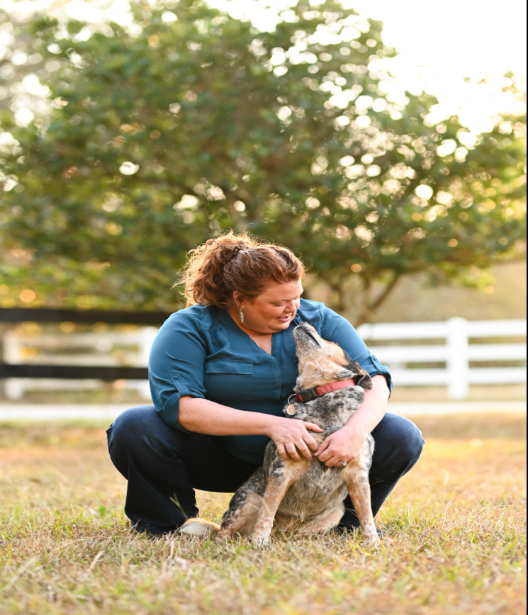
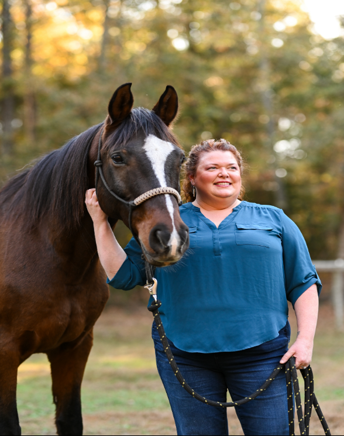
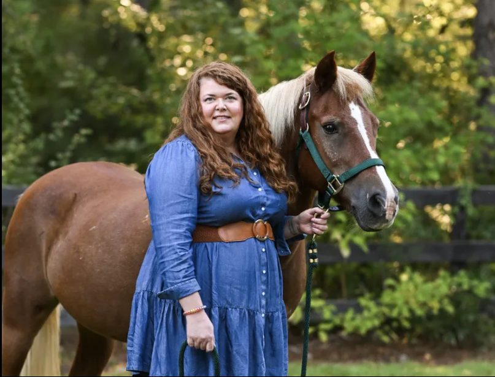
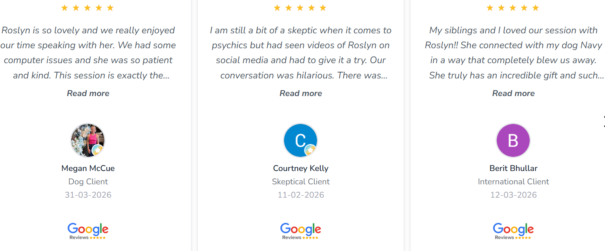

Hi! I'm Roslyn, and I'd love to talk with you and your pet.
I work with all animals — living and those who have passed.
Dogs, cats, horses, birds, and
everything in between. Sessions
are held live over video conference, so your pet doesn't even
need to be in the room.
As a Pet Communicator,
I help you navigate every stage
of your pet's journey — whether
that's understanding
their needs, finding more quality time together, or finding
peace after
they've crossed over. Through intuitive connection,
I offer insight, reassurance, and healing,
so you know your beloved
pet is at peace and still connected to you in spirit.

For first-time visitors — a simple, reassuring walkthrough.
You don't need to do anything special to prepare —
and your pet
doesn't even need to be in the room. Here's what to expect:
1. Book Your Session Choose the session length that fits your needs
and
schedule a time that works for you.
2. You'll receive a confirmation email
with all the details. All I need
from you
before our session is a photo of your animal
and their
name — that's it! Just reply to your
confirmation email with those
and you're all set.
3. We Connect via Video Sessions - You'll get a
link in your
confirmation email.
4. I'll tune in to your pet — living or passed.
Animals communicate
through feelings, images, and
impressions, and I translate what I
receive for you in real time.
5. You Get Answers Whether you're trying to understand a behavior,
check
in on their health, navigate an end-of-life decision, or simply
hear from
a pet you've lost — you'll leave with clarity, comfort, and
a deeper connection.
Sessions are recorded and shared with you afterward so you can
revisit everything.

All sessions are held virtually via
video conference —
your pet doesn't need to be
present.
(Prefer a phone session? Just text me after
booking
and we'll arrange it.)
1 possibly 2 Pets | 30 min | $149
1 possibly 3 Pets | 60 min | $299
The Clarity Series
Three 30-minute sessions
Discounted rate of $399

This Is Not a Regular Session.
An Emergency Session exists for one reason.
This session is for you if your pet has gone missing
— or if you need to
speak with your animal one last
time before saying goodbye.
When it comes to missing pets, I've become deeply
skilled at this work —
at tuning in, gathering details,
and helping guide you toward your animal.
I will give you
everything I have. I have to be honest with you: there is no
guarantee of finding your pet. What I can promise is that I will
show up
fully and give you everything I have.
I hold space for only a few Emergency Sessions each week because
this
work requires my full presence, and I want to give that completely
to you.
Please know: I will see your message and respond within 24–48 hours.
I am not available around the clock, and I ask for your patience and trust.
$347 · 30 minutes
To book, email me the word URGENT: PC@Roslynn01.com

Over 100 five-star reviews from pet owners just like you. See what their animals had to say.

ID had a lot to say about how he
experiences
fear — and during our
session, he showed us
exactly what
he meant. What happened next was
both startling and beautiful: in real
time, we
watched him get scared,
and were able to step
in and show
him how the humans in his life
could
support him. This moment
changed everything for Alyssa..

Gabe's owner suspected he was
hurting
somewhere in his back right
hind end —
but Gabe had something
different to say.
He told me the pain
was in his right front
leg, above the
hoof and below the knee. His owner
tried BEMER therapy on that exact
spot, and Gabe stretched
his leg out
as if to say thank you. Animals
always know.

Such a cool and fun experience!
Roslyn was sot
kind and spot on about
everything. It was so
heartwarming
being able to connect with my puppy
and confirm everything I was feeling.
She also gave
great advice to help him
with his separation anxiety.
Loved my
session 💛💛

Looking for the perfect gift for
an animal lover? You can
purchase a Pet
Communication Gift Certificate right
here!
Important: My booking system doesn’t process
gift
certificates directly, so to redeem:
✔ If you’ve received a gift certificate,
please email or
text me to schedule your
session.
✔ If you’re gifting this to someone,
let them know to
contact me for booking.
This way, I can personally make sure they
have the best
experience connecting with
their animal.

I've had a gift for communicating with animals — and
people — since I was a child. What started as
something
I couldn't quite explain became a calling
I've spent over
a decade developing and sharing with
the world.
For the past six years, I've focused exclusively on
animal
communication, working with pet owners
across the U.S. and
internationally — from Canada
and Ireland to Australia, Dubai,
and beyond. I've sat
with horse trainers, grieving pet owners, and
families
facing impossible decisions, and I've had the privilege
of being the
bridge between them and the animals
they love most.
My sessions are real, direct, and sometimes surprising.
Animals have a lot to say — about their health, their
emotions,
their needs, and yes, even what happens
after they cross over. I bring
warmth, honesty, and a
little humor to every session, because connecting
with your pet should feel like a relief, not a mystery.
Whether your animal is here with you or has passed
on, I'd
love to help you hear them

Where animal intuition meets untold stories.
Every episode dives into the unbelievable, the heartwarming, and sometimes the downright haunting tales from the animal world — told by the people who lived them. From horses who knew too much to pets carrying messages from beyond, we explore the deeper truths behind the stories that leave us wondering...
What do our animals know that we don't?
Have a wild story of your own? A riding mishap, a breeding gone wrong, a buyer beware moment — or something you just can't explain? If you're in the holistic pet health or horse world and want to share your experience (or even spotlight your business), I'd love to hear from you. You might just be our next episode.
Text or email me to be featured: +(414)248-7154
PC@Roslynn01.com